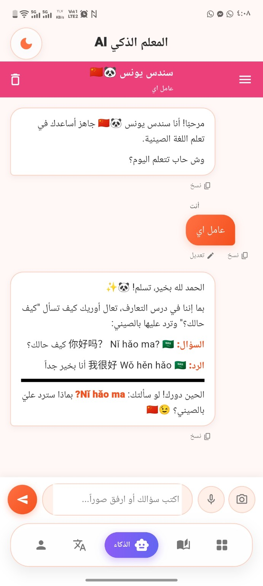
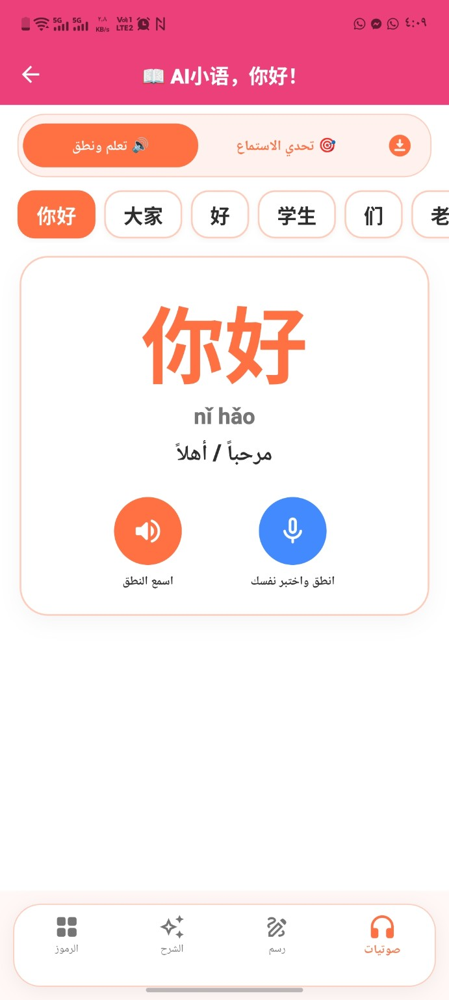

01 / FEATURED
Chinese Learning Platform
An AI-powered learning experience for Arabic-speaking students studying Chinese.
- AI learning assistant for interactive practice
- Dictionary, listening, pronunciation, speaking & writing
- HSK learning levels and interactive quizzes
- Customizable content for teachers and academies

